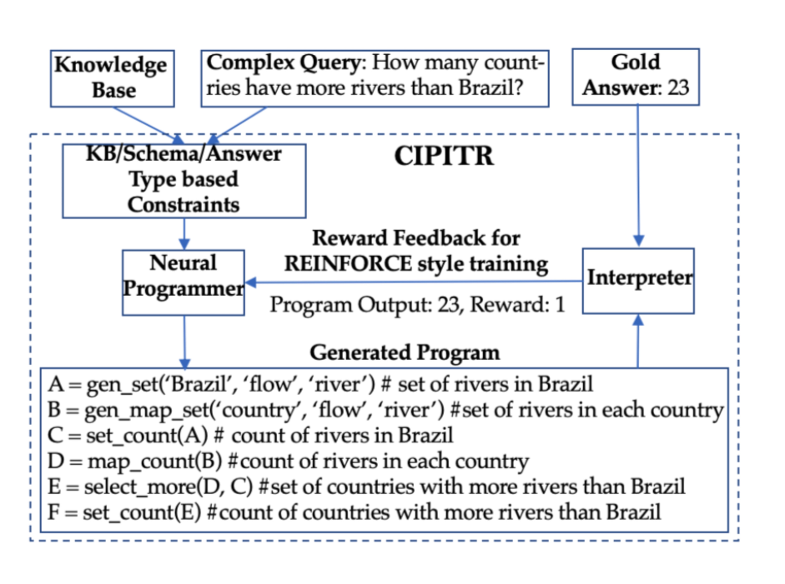
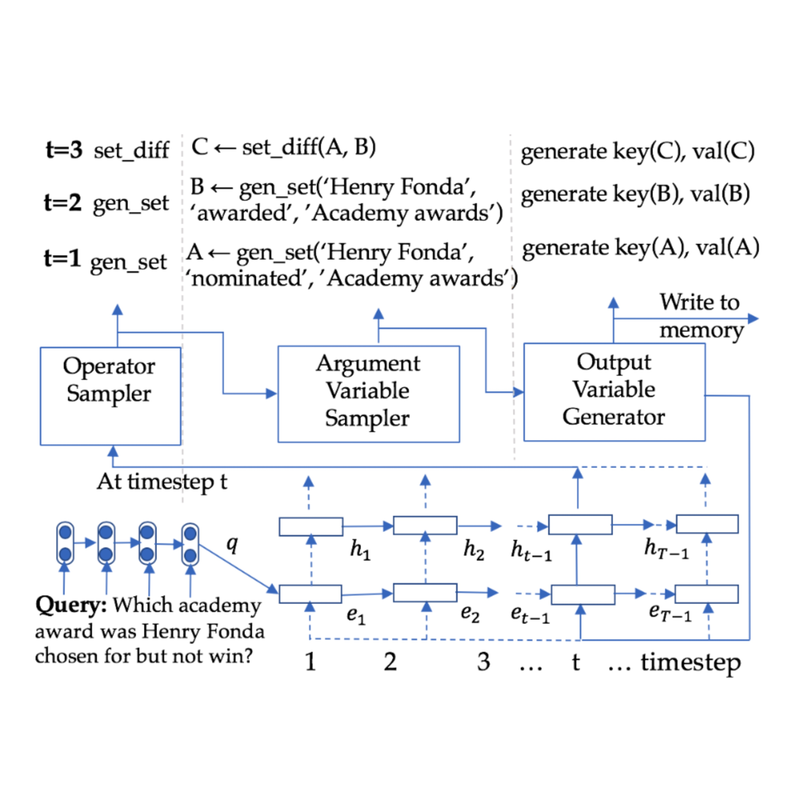
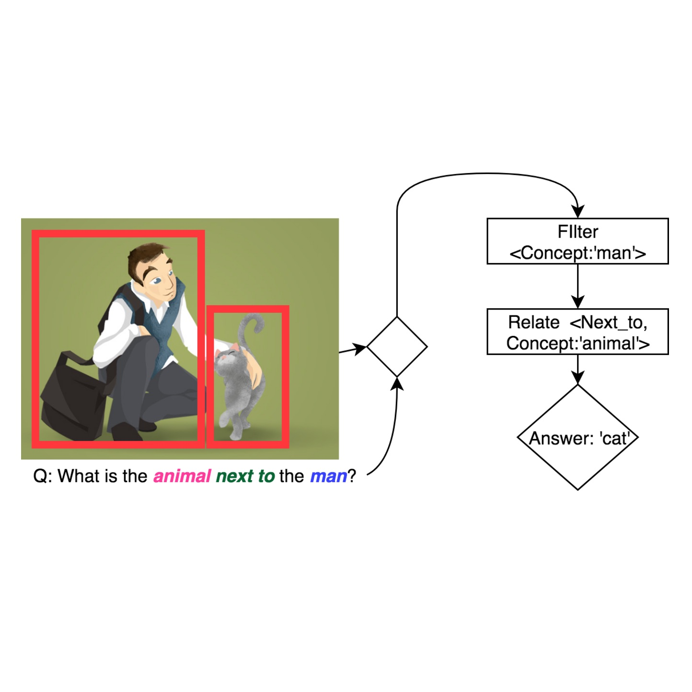

Projects
IBM Research Labs, Bangalore (Aug ’17 - Current)

Complex Program Induction for Querying Knowledge Bases in the Absence of Gold Programs (TACL 2019)(ACL 2019)(Dec ’17 - Jan ’19)
- Program Induction for Q&A is a paradigm of answering a question by instantiating Operator x Variable sequences
- The program is executed over a KB and the system receives only the reward obtained as feedback
- Our operators can encompass all kinds of questions in the CSQA dataset
- On the CSQA dataset our CIPITR has a F1-score(%) of 58.92 which is +450% improvement than that of the state-of-the-art NSM (10.63)

Neural Program Induction for KBQA Without Gold Programs or Query Annotations (IJCAI 2019)(May ’18 - Feb ’19)
- KBQA on a more realistic setting wherein there is additional noise induced by absence of Query annotations and only final answer as supervision
- The lack of gold Query annotations induces debilitating variance leading to catastrophic forgetting, especially when using RL methods
- Proposed and realized a noise-resilient deep-RL Algorithm, SSRP that evades noise-induced instability through continual retrospection
- On the WebQuestionsSP dataset, our SSRP has an overall F1-score(%) of 72.61 and it outperforms state-of- the-art NSM by +5.23%
- On the noisy CQA-12K dataset we compared F1-Score(%) obtained by our SSRP extensively against SRP (CIPITR), A2C & NSM. On the entire test set, SSRP outperformed the closest baseline SRP by +24.3%

Realistic Online Symbolic Visual Question Answering (Jan ’19 - Current)
- The general notion of Symbolic Reasoning VQA methods is to answer a question by inducing neural programs over Operators×Concepts trajectories
- Currently, SOTA works on VQA focus on offline learning from static datasets where offline learning involves only a fixed set of concepts
- In a real life settings, unseen concepts can come up both in the referenced datasource(from where concepts are extracted) and questions from users
- Building a lifelong learning model for VQA inspired from state machine literature
- Proposed the idea/backbone for enabling continual learning in the given setting and implemented the entire symbolic reasoning pipeline in pytorch framework
IBM Research Labs, Bangalore (Summer ’15)

Continuous authentication on mobile phones using touchscreen input (May ’15 - Jun ’15)
- Goal was to authenticate users based upon touch data
- Computed 30 geometric feature representations of each stroke
- Applied vector quantization methods on the stroke data to reduce the computational complexity and optimize data storage, eventually optimizing battery life
- Achieved 17% Equal Error Rate on just single swipe classification on applying KNN based classifiers
IIT Madras, Chennai (Jul ’12 - Jul '17)

Language Expansion in Text-Based Games (Jun ’15 - Sep ’16)
- Explored interaction based representation learning in the context of learning to play text-based games
- Designed a Deep-RL based mechanism for expanding an agent’s vocabulary using the vocabulary of agents trained for multiple text-based games
- Empirically established the utility of embeddings learned by our method by qualitatively analyzing the tSNE embeddings and the transfer learning performance
Intelligent Ground Vehicle Competition (May ’16)
- Member of the image processing team, whose objective was to detect lanes on the ground and avoid obstacles
- Engineered an algorithm for lane prediction given partial lane detection information and camera induced noise, for assisting in maintaining course